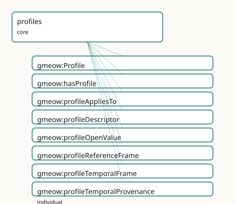

GMEOW Profile Meta-pattern Module
- IRI: https://blackcatinformatics.ca/gmeow/slices/profiles
- Tier: core
Group: core
What This Slice Covers
This slice owns 8 terms and contributes 1 mapping or projection rows. Use it when its terms match the native fact you want to preserve; use the linkage tables to see how those facts leave GMEOW for consumer vocabularies.
Dependencies
Consumers
- The
Profilepattern under every reference frame: temporal, spatial, currency, and tuning frames.
Local Map

Terms
Classes
| Term | Label | Definition |
|---|---|---|
gmeow:Profile |
Profile | A closed descriptor schema for an open-but-structured facet. A Profile self-describes the properties that constitute the facet and the open value vocabularies... |
Properties
| Term | Label | Definition |
|---|---|---|
gmeow:hasProfile |
has profile | Links an entity, value or frame to the Profile that governs its structure. |
gmeow:profileAppliesTo |
profile applies to | The class of entities to which this Profile applies. |
gmeow:profileDescriptor |
profile descriptor | A property that is part of this Profile's closed descriptor schema. |
gmeow:profileOpenValue |
profile open value | An open value-vocabulary class (instances are individuals, never subclasses) used by this Profile. |
Individuals
| Term | Label | Definition |
|---|---|---|
gmeow:profileReferenceFrame |
Reference Frame Profile | The closed descriptor schema for gmeow:ReferenceFrame instances: realm, axes, dimensionality, kind, host-dependence, determinacy, metric, and transform descrip... |
gmeow:profileTemporalFrame |
Temporal Frame Profile | The closed descriptor schema for gmeow:TemporalFrame instances: the reference-frame spine plus time scale, calendar system, and reference position. |
gmeow:profileTemporalProvenance |
Temporal Provenance Profile (four clocks) | The closed descriptor schema for statement-level temporal provenance: valid-from, valid-until, asserted-at, and recorded-no-later-than. Applies to statements,... |
Linkages
- Rows: 1
- Projection profiles: -
- External vocabularies:
prof
| Source | Kind | Profile | Predicate/Relation | Target | Evidence |
|---|---|---|---|---|---|
gmeow:Profile |
equivalence | - |
skos:relatedMatch | prof:Profile | gmeow-classes.sssom.tsv; gmeow:eqClasses047; confidence 0.8 |
Guide
Profiles — closed descriptor schemas over open value vocabularies
Slice:
https://blackcatinformatics.ca/gmeow/slices/profiles· tier: core The meta-pattern that makes "extensible by construction" a structure, not a slogan.
Most vocabularies face a false choice: close a facet down (an enum — dead on arrival,
Principle 9 forbids it) or leave it a free-for-all (anything goes, nothing is checkable).
The Profile meta-pattern is GMEOW's third way: a closed descriptor schema (the fixed
set of properties that constitute a facet) over open value vocabularies (the
individuals those properties draw from — extended by minting data, never by schema
change). A Profile self-describes: it is an InformationObject in the graph that names
its own descriptors and value classes, so tooling can validate, render, and extend a
facet by reading the graph rather than reading code.
This is the load-bearing pattern beneath Principle 11 (frame-relativity): every
ReferenceFrame — temporal, spatial, currency, even instrument-tuning frames —
is governed by a Profile, which is what makes "a value asserted without its
self-describing frame is ill-formed" enforceable by construction (the kernel's
gmeow:requiresFrame generates the shapes; this slice supplies the schema they check).
The meta-pattern
gmeow:Profile
A closed descriptor schema for an open-but-structured facet — a gufo:Kind under
InformationObject. A Profile instance bundles: the class it applies to, the properties
that constitute the facet, and the open value vocabularies those properties draw from.
Mint one whenever a new family of self-describing things (a new frame realm, a new
descriptor cluster) enters the ontology; never mint per-value subclasses instead.
gmeow:hasProfile
Links an entity, value, or frame to the Profile that governs its structure. The instance
side of self-description: a consumer holding only the data can dereference the Profile
and learn the complete descriptor schema without any out-of-band documentation.
gmeow:profileAppliesTo
The class of entities this Profile governs (e.g. profileReferenceFrame applies to
gmeow:ReferenceFrame). The hook validation tooling uses to find which instances a
Profile's schema constrains.
gmeow:profileDescriptor
A property belonging to this Profile's closed descriptor schema. An
owl:AnnotationProperty deliberately: it points at properties (metamodelling), and the
annotation form keeps the ontology in OWL 2 DL (Principle 3). Closure of the descriptor
set is documentation-and-SHACL discipline, not an OWL axiom.
gmeow:profileOpenValue
An open value-vocabulary class used by this Profile — a class whose instances are
individuals, never subclasses (Principle 9). This is where the openness lives: adding a
new calendar, axis, or metric kind is data added to a profileOpenValue class, with the
descriptor schema unchanged.
The seed profiles — worked examples
gmeow:profileReferenceFrame · gmeow:profileTemporalFrame · gmeow:profileTemporalProvenance
Three seeds prove the pattern at three scales. profileReferenceFrame is the spine:
realm, axes, dimensionality, kind, host-dependence, determinacy model, parent frame,
transforms, solver, and metric kind — the full self-description of any
gmeow:ReferenceFrame. profileTemporalFrame shows specialization: the same spine
plus the temporal descriptors (frameTimeScale, frameCalendarSystem,
frameReferencePosition) and their open vocabularies. profileTemporalProvenance shows
the pattern applied to statements rather than frames: the four clocks (validFrom /
validUntil / assertedAt / recordedNoLaterThan) as a closed descriptor schema with
no profileAppliesTo — it governs annotations on any reified statement, not instances
of one class.
Boundaries
Frame transformation — converting between frames a Profile describes — is solver-layer
computation (Principle 12): transformsTo and frameSolver are descriptors naming the
relationship and the engine, never axioms performing it. The pattern has no good external
alignment target (DCAT application profiles and SHACL node shapes are adjacent but
neither self-describes open value vocabularies); it stays unaligned rather than forcing a
weak match (Principle 5). Depends on kernel, places, and temporal — the slices whose
frames the seed profiles describe; consumed by every reference frame in the system.